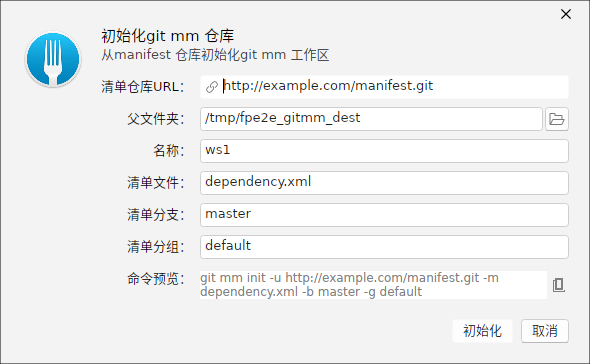
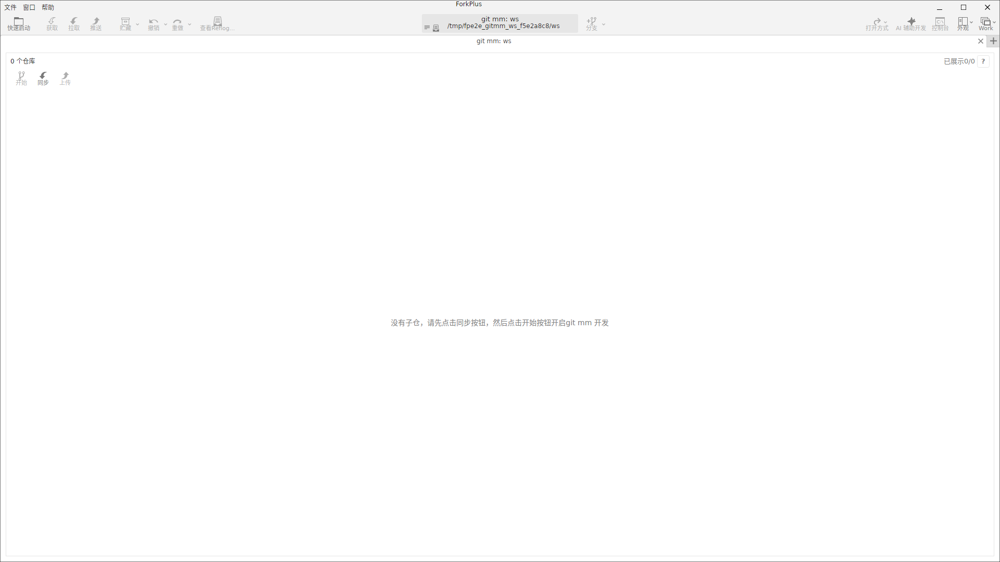
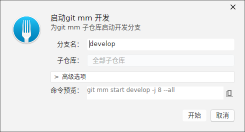
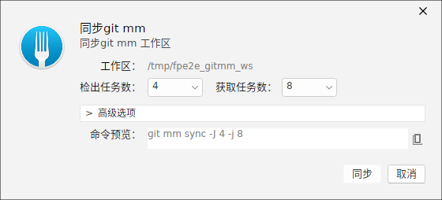
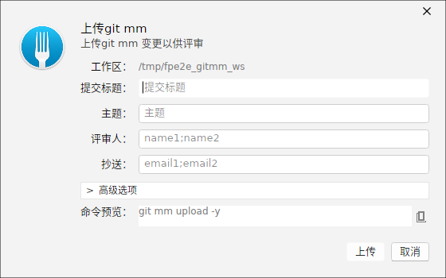

Git Mm 是一种以子仓库（sub-repo）为核心的源码管理扩展：一个「工作区」通过 manifest 清单引用若干外部仓库并通过相对路径组合出完整源码树。ForkPlus 可以识别这类工作区（含 .mm / .repo 标记目录），并为其中的子仓库提供 开始（Start）/ 同步（Sync）/ 上传（Upload） 等常用操作。
小贴士：Git Mm 操作依赖单独的
git-mm 命令行工具（3.x）并需要它位于 PATH 中（或在偏好设置里配置其路径）。若未安装，ForkPlus 会弹窗提示 Git Mm 功能不可用，但仓库仍可作为普通仓库浏览。初始化 Git Mm 工作区
打开「初始化 Git Mm」窗口，填写三类信息：
- 清单地址 Manifest URL：引用子仓库清单的远端仓库地址。
- 父目录 Parent Directory：工作区将被创建在该目录下。
- 仓库名 Repository Name：工作区目录名。
窗口下方实时预览将执行的命令（如 git mm init -u <manifest> -m dependency.xml -b master -g default），确认后提交。

Git Mm 工作区标签页
打开一个含 .mm（或 .repo）标记目录的路径，ForkPlus 会识别它是一个 Git Mm 工作区，并以专用的 Git Mm 标签页打开：标签标题以 git mm: <工作区名> 标识，并显示工作区根路径。该标签页归纳了工作区内各子仓库的状态。

子仓库操作：Start / Sync / Upload
针对工作区内的子仓库，ForkPlus 提供三个操作窗口。它们都先显示对应的 git mm 命令预览，并有「复制命令」按钮供手动粘贴执行：
- 开始 Start：为选中的子仓库在指定目标分支上开始一个任务（新分支）。
- 同步 Sync：把子仓库与清单声明的版本同步（拉取并检出到目标提交）。
- 上传 Upload：把子仓库的本地改动推送到远端，便于他人同步。



注意：Git Mm 的真正同步/上传会改写子仓库
HEAD 或推送远端，请在确认当前分支干净、无未提交改动后再执行。为确保版本一致，建议先「同步」再在子仓库内开发，最后「上传」分享改动。